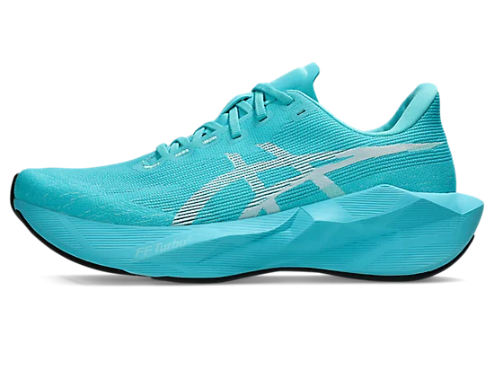
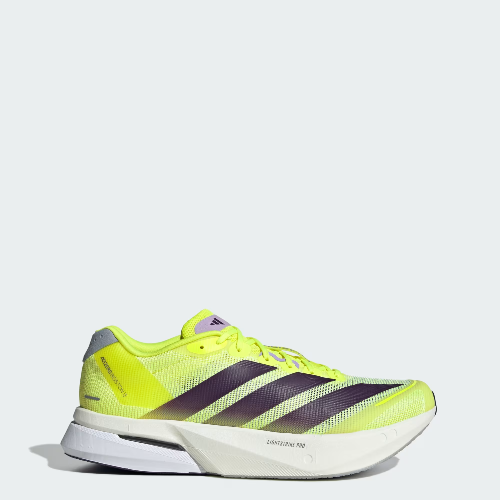
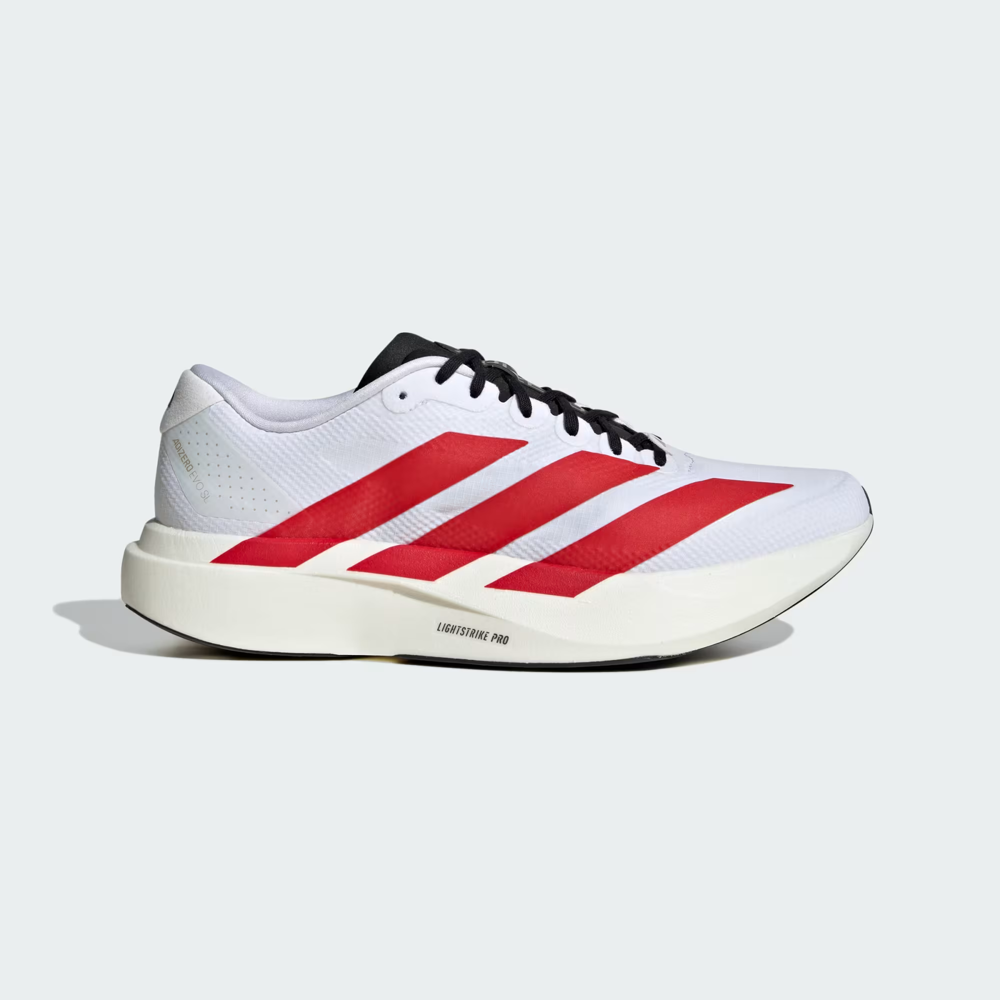
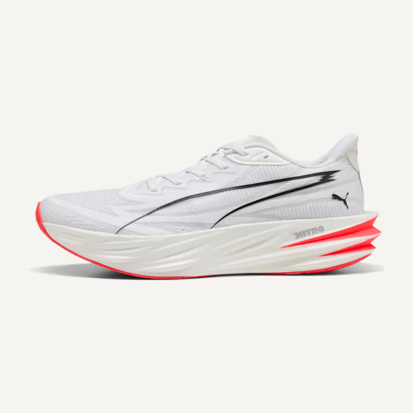
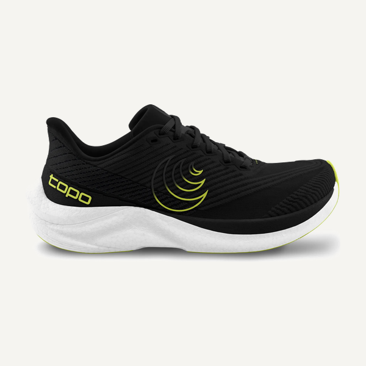

Saucony Endorphin Speed 5
BalancedA lightweight nylon-plated trainer great for your faster runs.
The Endorphin Speed is a perfect shoe for somebody looking for a lightweight peppy trainer. This shoe performs very well as a soft yet springy option for tempo runs, or a long run where you really want to push it. The nylon plate creates a lot of pop, and since it isn't as aggressive as a carbon plate it is a great trainer.
Pro tip: Fits true to size.
Around $175
Saucony Kinvara 16
Low & firmA lightweight shoe with a lot of bounce, made for your fast workouts.
The Kinvara is a super lightweight lower-cushion trainer designed to keep you connected to the ground. You will feel the road under your foot as you crank it into a new gear with this shoe. Perfect for a tempo or speed workout, it's a great option for runners wanting a shoe for their faster days.
Pro tip: Fits slightly short, a little on the narrower side.
Around $130
New Balance Rebel v5
BalancedA lightweight bouncy shoe great for many running situations.
The Rebel has a very soft foam making it a super comfortable option for easy long runs. It does also have a ton of pop off the toe and with its lightweight design it also excels as a faster tempo/speedwork shoe.
Pro tip: Fits true to size, more snug than other New Balance shoes.
Around $145

Asics Novablast 6A soft and springy shoe great for a faster run.
The Novablast is a lightweight peppy trainer that is great for the runner trying to shave some time off their next race. This shoe is great for tempo or faster long runs and the soft but bouncy feel of the shoe is sure to feel great all the way to the finish.
Pro tip: Fits true to size.
Around $155

Adidas Adizero Boston 13A firmer plated trainer built for your faster and longer training days.
The Boston uses Adidas' Energy Rods and a firmer Lightstrike foam to create a snappy, responsive ride that really does well when you pick up the pace. It's a great trainer for tempo runs, long runs, and marathon prep, and can even double as a budget race-day shoe. A solid option for runners who prefer a firmer, more responsive feel.
Pro tip: Fits a little short, with a narrower heel.
Around $160

Adidas Adizero Evo SLA lightweight bouncy shoe great for daily miles or picking up the pace.
The Evo SL puts Adidas' Lightstrike Pro foam into a light, medium-cushion, plateless shoe, giving it a springy, responsive feel without being too aggressive. It's a versatile trainer \u2014 comfortable enough for easy daily miles but light and peppy enough to push the pace on a tempo day. A great pick if you want one shoe to cover most of your running.
Pro tip: Fits true to size.
Around $170
A peppy trainer great for daily training or faster workouts.
The Mach utilizes Hoka's rocker bottom to create a nice pop near the toe off. It's slightly on the lower-cushion side, but it's a soft foam which will keep your feet happy for most moderate runs. It's a great threshold or tempo run shoe, but is also great as a lightweight, springy daily trainer.
Pro tip: Fits true to size.
Around $145

Puma Deviate PureA lightweight bouncy shoe great for daily miles or a faster run.
The Deviate Pure uses Puma's Nitro foam without a plate, so you get a soft but responsive ride letting you feel the ground underneath you. It's light and flexible, which makes it a fun daily trainer that can pick up the pace when you want it to. A great everyday option for runners looking for a more responsive shoe.
Pro tip: Fits true to size, a touch narrow up front like most Pumas.
Around $150

Topo Cyclone 3A low-cushion lightweight shoe built for your faster, shorter runs.
The Cyclone is a minimal, lightweight speed shoe with a bouncy Pebax foam that keeps you close to the ground and quick on your feet. There isn't a lot of cushion, so it shines for tempo days, speed work, and shorter fast runs rather than long miles. Great for someone wanting a quick, responsive shoe with a lot of room for the toes.
Pro tip: Fits true to size, with a wide toebox and a more standard midfoot.
Around $155